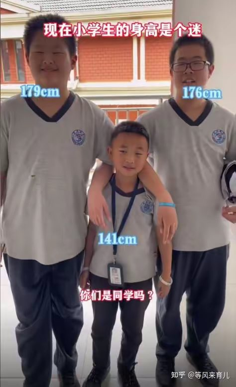
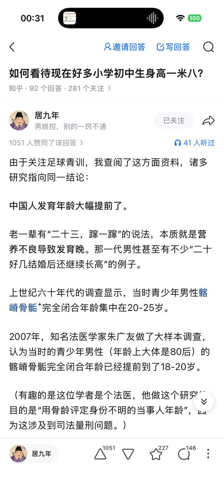
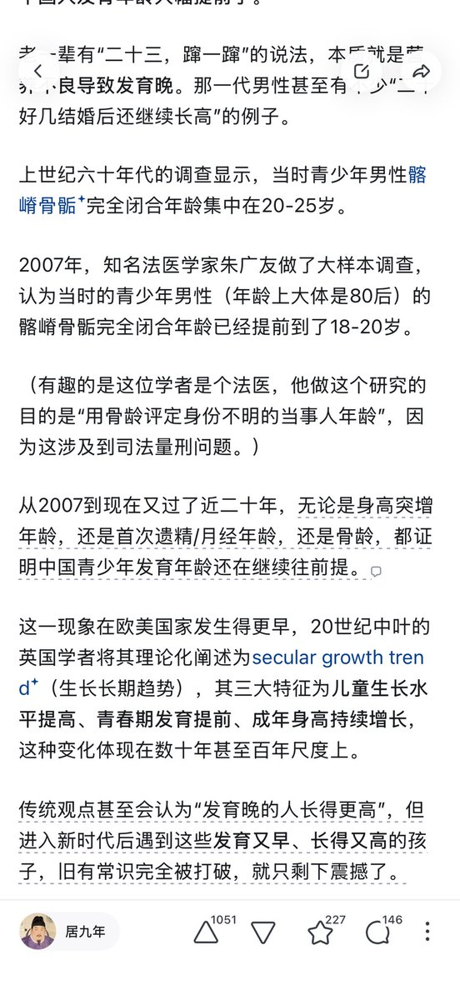

梨雪沫
@ilobius
@litztsong 就不要用我们这一代人的刻板印象 来评价下一代人的生活了



litz tsong（利兹）🏳️🌈🏳⚧
@litztsong
现在中国的8岁孩子
感觉对下一代的跨性别孩子来说不是好事
像我这样长到1米9的要越来越多了
这种哪怕12岁就开始用性激素都不顶用，照样要长到这么高的
青春期阻滞剂可能会带来更糟糕的效果
在本身就生长激素旺盛的情况下，又减少了性激素导致骨骺闭合的作用，这样可能会长到2米的 https://t.co/RXp7Mp1z0s